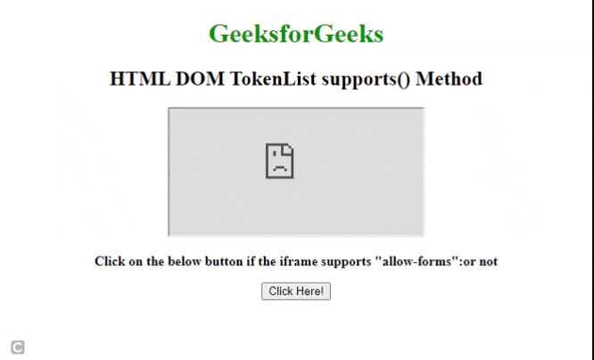

@SUPPORTS
IDEAS CLAVE
- Support tiene como proposito aplicar estilos condiciones segun la compatibilidad de los CSS en navegadores.
- Estregias
- La mejora progresiva: añade mejoras solamente si el navegador lo soporta.
- La degradacion elegente: Asegura que las funciones avanzadas se vean bien en navegadores mas antiguos.
- Operadores
- And significa que ambas condiciones deben ser verdaderas.
- Or solamente una condicion debe ser verdadera.
- Not la condicion debe ser falsa.
NOTAS DE LA CLASE
Mejora progresiva y degradacion elegante
- La mejora progresiva es conocida como una estrategia de diseño web, en el que consite en crear una version basica de la funcionaldiad para todos los navegadores y luego agregar caracteristicas mejoradas para navegadores que la soporten
- La degradacion elegante se refiere a una estrategia de crear la version mas avanza de una funcionalidad y asegurarse de que se degrade de manera aceptable en navegadoresmas antiguos o menos capaces.
Esta regla permite detectar si el navegador soporta una caracteristica CSS en especifico y poder aplicar estilos condicionales basados en dicha compatibilidad.
Es realmente util para implementar funcionalidades modernas mientras se garantizan que los navegadores que no soporten estas caracteristicas aun presenten un diseño funcional.
- La estructura basica de @supports es la siguiente:
@supports(propiedad:valor){ Elemento{ Propiedad; valor;//estilos que aplican si la caracteristica es soportada } } - Condiciones de @supports
La regla @supports puede utilizar los siguientes operadores logicos:
And - Or - Not. (Estas condiciones se pueden combinar) - And
Ambas condiciones deben ser verdaderas @supports (propiedad:valor) and (propiedad:valor) - Or
Almenos una de las condiciones debe ser verdadera @supports (propiedad:valor) or (propiedad:valor) - Not
La condicion debe ser falsa @supports not (propiedad:valor)
